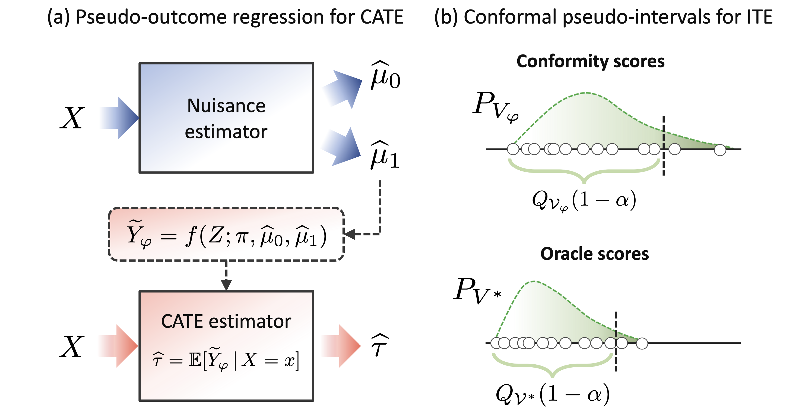
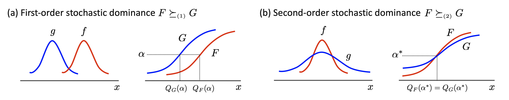
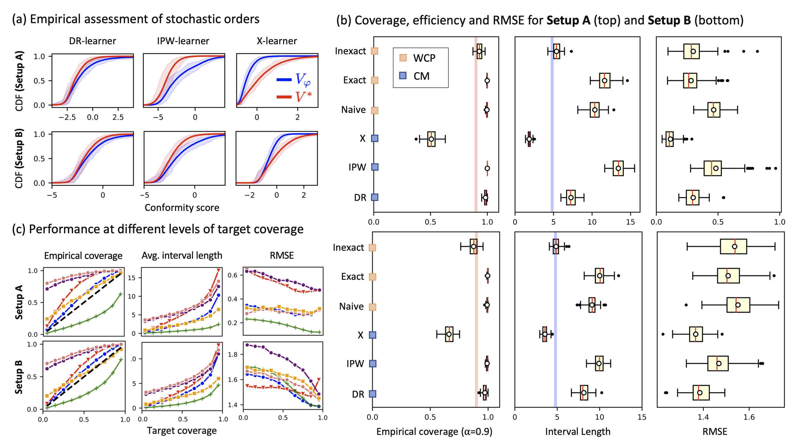
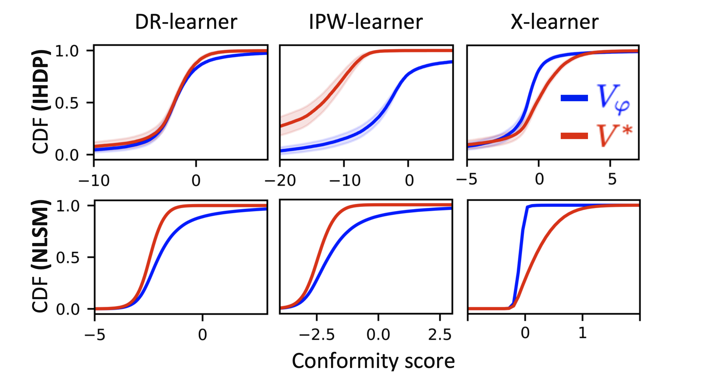

1. Introduction
- 최근 의료, 정치, 사회과학 등 다양한 분야에서 개별 대상에 대한 처치 효과의 이질성(Heterogeneity in Treatment Effects)을 식별하는 문제는 핵심적인 과제로 떠올랐습니다.
- 단순히 집단 전체의 평균적인 효과를 아는 것을 넘어, “이 약이 특정 환자에게 얼마나 효과가 있을까?”와 같은 질문에 답하기 위해 Machine Learning(ML) 모델을 활용하려는 시도가 늘어나고 있습니다.
- 하지만 기존의 ML 기반 인과추론 모델들은 대부분 조건부 평균 처치 효과(CATE, Conditional Average Treatment Effect)의 점 추정(Point Estimate)에만 집중해 왔습니다. 즉, 주어진 공변량 \(X\)를 가진 개인의 기대 처치 효과를 하나의 숫자로만 예측할 뿐, 그 예측이 얼마나 불확실한지에 대한 정보는 제공하지 못했습니다.
- 이 논문은 이러한 한계를 극복하기 위해, 개별 처치 효과(ITE, Individual Treatment Effect)에 대한 예측 구간(Predictive Intervals)을 생성하는 새로운 프레임워크를 제안합니다.
기존 방법론(Bayesian)의 한계
기존에 ITE의 불확실성을 다루기 위한 시도들은 주로 Bayesian 방법론에 의존해 왔습니다.
대표적으로 BART(Bayesian Additive Regression Trees)나 Gaussian Processes(GPs)가 있습니다.
이들은 사후 분포(Posterior Distribution)를 통해 신용 구간(Credible Interval)을 제공할 수 있다는 장점이 있습니다.
그러나 이러한 Bayesian 접근법은 다음과 같은 명확한 한계가 존재합니다:
- Model-Specific: 특정 모델 구조에 종속적입니다. 최근 Vision이나 NLP 분야에서 두각을 나타내는 Transformer와 같은 현대적인 딥러닝 아키텍처에 유연하게 적용하기 어렵습니다.
- Lack of Frequentist Guarantee: Bayesian 신용 구간의 커버리지(Coverage)는 사전 분포(Prior)에 의존하며, 유한한 샘플(Finite-sample)에서 빈도주의적 커버리지(Frequentist Coverage)를 보장하지 못합니다.
Conformal Prediction (CP)의 도입
- 이러한 배경에서 저자들은 Conformal Prediction (CP)에 주목합니다.
- CP는 어떤 ML 모델이든 상관없이(Model-agnostic), 데이터 분포에 대한 가정 없이(Distribution-free), 유효한 예측 구간을 생성할 수 있는 빈도주의적 대안입니다.
- 하지만 일반적인 회귀(Regression) 문제와 달리, 인과추론 문제에 CP를 적용하는 것은 “인과추론의 근본적인 문제(Fundamental Problem of Causal Inference)” 때문에 훨씬 까다롭습니다.
Core Challenges in Causal Conformal Prediction
- 일반적인 지도 학습(Supervised Learning)에서 우리는 입력 \(X\)와 정답 라벨 \(Y\)를 모두 관측할 수 있습니다.
- 하지만 인과추론에서의 “라벨”은 ITE(Individual Treatment Effect)이며, 이는 관측이 불가능합니다.
\[ \text{ITE}_i = Y_i(1) - Y_i(0) \]
- 여기서 \(Y_i(1)\)은 처치를 받았을 때의 잠재적 결과, \(Y_i(0)\)는 받지 않았을 때의 결과입니다.
- 우리는 현실에서 둘 중 하나만 관측할 수 있습니다(Factual Outcome). 나머지 하나는 영원히 알 수 없는 반사실적 결과(Counterfactual Outcome)입니다.
- 이로 인해 ITE에 대한 예측 구간을 생성할 때 두 가지 주요한 도전 과제가 발생합니다.
Challenge 1: Covariate Shift (공변량 이동)
- 처치 집단과 통제 집단은 무작위로 배정되지 않는 경우가 많습니다.
- 개인의 특성(Covariate)에 따라 처치를 받을 확률이 달라지기 때문에, 처치군과 대조군의 공변량 분포가 서로 다릅니다.
- 결과적으로 모델을 학습시키는 데이터의 분포와 우리가 예측하고자 하는 목표 모집단의 분포가 달라지는 Covariate Shift 문제가 발생합니다.
Challenge 2: Inductive Biases (귀납적 편향)
- ITE는 직접 관측되지 않기 때문에 모델을 ITE에 직접 피팅(Fit)할 수 없습니다.
- 대신 우리는 \(Y(1)\)과 \(Y(0)\)라는 Nuisance Parameters(관심 없는 모수)를 각각 추정하고 이를 조합해야 합니다.
- 이 과정에서 어떤 방식으로 잠재적 결과를 추정하고 결합하느냐에 따라 모델의 성능이 달라지며, 이를 해결하기 위해 다양한 Meta-learner들이 개발되었습니다.
Proposed Framework: Conformal Meta-learners
- 이 논문의 핵심 기여는 위의 두 가지 문제(Covariate Shift, Inductive Biases)를 동시에 해결하는 Conformal Meta-learners 프레임워크를 제안한 것입니다.
Two-stage Pseudo-outcome Regression
- 저자들은 Two-stage pseudo-outcome regression에 기반한 광범위한 Meta-learner 클래스에 집중합니다.
- 이 방법론은 다음과 같은 2단계로 진행됩니다:
- Pseudo-outcome Estimation: 관측 가능한 변수들만을 사용하여 ITE의 대리 변수(Proxy) 역할을 하는 Pseudo-outcome을 생성합니다.
- Regression: 이 Pseudo-outcome을 공변량 \(X\)에 대해 회귀 분석하여 CATE의 점 추정치를 얻습니다.
Conformal Inference Procedure
Conformal Meta-learner는 이 과정 위에 CP를 적용합니다.
핵심 아이디어는 보류된 보정 데이터셋(Held-out Calibration Set)에서 Pseudo-outcome에 대한 적합성 점수(Conformity Scores)를 계산하고, 이 점수의 경험적 분위수(Empirical Quantile)를 사용하여 구간을 구성하는 것입니다.
이 접근법이 갖는 장점은 다음과 같습니다:
- Covariate Shift 해결: Pseudo-outcome과 연관된 공변량의 분포는 학습 데이터와 테스트 데이터에서 동일하게 취급될 수 있습니다.
- Inductive Biases 해결: 보정 단계(Calibration step)가 모델 아키텍처와 분리되어 있습니다. 따라서 CATE 추정에 효과적이라고 알려진 기존의 다양한 Meta-learner(예: T-learner, X-learner 등)나 딥러닝 아키텍처를 그대로 가져와서 사용할 수 있습니다.
Theoretical Guarantee: Stochastic Ordering
하지만 Pseudo-outcome에 대해 CP를 적용한다고 해서, 그것이 곧바로 관측되지 않은 ITE에 대한 커버리지를 보장하는 것은 아닙니다.
저자들은 이를 증명하기 위해 확률적 순서(Stochastic Ordering) 프레임워크를 도입했습니다.
만약 우리가 사용하는 Pseudo-outcome 기반의 적합성 점수(Conformity Score)가, 실제 ITE를 알았을 때 계산할 수 있는 “Oracle” 적합성 점수보다 확률적으로 우월(Stochastically Dominate)하다면, 결과적으로 생성된 구간은 유효(Valid)합니다.
특히, 널리 사용되는 Doubly-Robust Learner와 같은 Meta-learner들이 이러한 확률적 지배 조건(또는 볼록 지배 조건)을 만족함을 증명했습니다.
2. Predictive Inference of Individual Treatment Effects (ITEs)
2.1. Problem Setup
- 논문은 인과추론의 표준인 잠재적 결과 프레임워크(Potential Outcomes Framework), 혹은 Rubin Causal Model을 따릅니다.
Notation & Definition
- 데이터는 \(n\)명의 대상(subject)에 대해 관측되며, 각 대상 \(i\)는 다음과 같은 변수들을 가집니다.
- Covariates (공변량) \(X \in \mathcal{X}\): 개인의 특징.
- Treatment Indicator (처치 여부) \(W \in \{0, 1\}\): \(1\)이면 처치군, \(0\)이면 대조군.
- Outcome (결과) \(Y \in \mathbb{R}\): 우리가 관심 있는 결과 변수.
- 각 대상 \(i\)에 대해 두 가지 잠재적 결과(Potential Outcomes)가 존재합니다.
- \(Y_i(1)\): 처치를 받았을 때의 결과 (\(W=1\))
- \(Y_i(0)\): 처치를 받지 않았을 때의 결과 (\(W=0\))
- 하지만 현실에서는 인과추론의 근본적인 문제(Fundamental Problem of Causal Inference)로 인해, 우리는 오직 실제 발생한 결과(Factual Outcome)만을 관측할 수 있습니다.
\[ Y_i = W_i Y_i(1) + (1 - W_i) Y_i(0) \]
- 반면, 관측되지 않은 쪽인 \(Y_i(1-W_i)\)는 반사실적 결과(Counterfactual Outcome)가 됩니다.
- 우리는 \(n\)명의 대상에 대한 데이터 생성 과정(Data Generation Process)이 결합 분포 \(P\)로부터 독립적이고 동일하게 분포(i.i.d.)한다고 가정합니다.
\[ (X_i, W_i, Y_i(0), Y_i(1)) \overset{iid}{\sim} P(X, W, Y(0), Y(1)), \quad i = 1, \dots, n \tag{1}\]
Assumptions
관측된 데이터 \(\{Z_i = (X_i, W_i, Y_i)\}_{i=1}^n\)로부터 인과 효과를 식별(Identification)하기 위해 다음 세 가지 가정을 도입합니다.
- Unconfoundedness (Ignorability): \[(Y(0), Y(1)) \perp W \mid X\]
- 공변량 \(X\)가 주어졌을 때, 처치 할당 \(W\)는 잠재적 결과들과 독립입니다.
- 즉, \(X\) 외에 처치와 결과 모두에 영향을 주는 숨겨진 교란 변수(Confounder)는 없습니다.
- Consistency: \[Y = Y(W)\]
- 관측된 결과 \(Y\)는 실제로 받은 처치 \(W\)에 해당하는 잠재적 결과와 일치합니다.
- Positivity (Overlap): \[0 < P(W=1 \mid X=x) < 1, \quad \forall x \in \mathcal{X}\]
- 모든 공변량 영역에서 처치군과 대조군이 될 확률이 0이 아니어야 합니다.
CATE vs. ITE: 무엇이 다른가?
이 논문에서 가장 중요하게 강조하는 구분이 바로 CATE와 ITE의 차이입니다.
CATE (Conditional Average Treatment Effect):
- 기존 연구들이 주로 추정해온 결정론적(Deterministic) 함수로, 조건부 기대값의 차이입니다. \[\tau(x) \triangleq \mathbb{E}[Y(1) - Y(0) \mid X=x]\]
ITE (Individual Treatment Effect):
- 이 논문의 관심 대상인 확률 변수(Random Variable)입니다. \[\text{ITE}_i = Y_i(1) - Y_i(0)\]
CATE는 “당신과 같은 특성을 가진 사람들의 평균적인 효과”를 말해주지만, ITE는 “당신이 겪을 실제 효과”를 의미합니다.
ITE는 모델의 오차뿐만 아니라, 같은 \(X\)를 가진 사람들 사이에서도 존재하는 내재적 변동성(Intrinsic Variability)을 포함합니다.
관측된 변수 \(Z=(X, W, Y)\)의 분포를 기술하기 위해, 우리는 다음과 같은 두 가지 Nuisance Functions(방해 모수 함수)를 정의합니다.
- Propensity Score \(\pi(x)\): 처치 할당 메커니즘을 나타냅니다.
- Outcome Mean Functions \(\mu_w(x)\): 각 처치 그룹 내에서의 조건부 기대 결과를 나타냅니다.
\[ \begin{aligned} \pi(x) &= \mathbb{P}(W=1 \mid X=x), \\ \mu_w(x) &= \mathbb{E}[Y \mid X=x, W=w], \quad w \in \{0, 1\}. \end{aligned} \tag{2}\]
- 특히 본 논문에서는 데이터가 실험 연구(Experimental Study)에서 얻어졌거나 처치 할당 메커니즘이 알려져 있어, Propensity Score \(\pi(x)\)를 알고 있다(Known)고 가정합니다.
목표: Marginally Valid Predictive Interval
- 논문의 목표는 새로운 데이터 \(X_{n+1}\)이 주어졌을 때, 실제 ITE가 포함될 확률이 \(1-\alpha\) 이상인 예측 구간(Predictive Band) \(\hat{C}(x)\)를 구성하는 것입니다.
\[ \mathbb{P}(Y_{n+1}(1) - Y_{n+1}(0) \in \hat{C}(X_{n+1})) \ge 1 - \alpha \tag{3}\]
- 이 확률은 훈련 데이터 \(\{Z_i\}\)와 새로운 테스트 포인트의 랜덤성을 모두 고려한 Marginal Validity를 의미합니다.
2.2. Conformal Prediction
- 이 목표를 달성하기 위한 도구로 Conformal Prediction (CP)을 사용합니다.
- CP는 모델이나 분포에 대한 가정 없이(Model-free, Distribution-free) 유효한 예측 구간을 생성하는 프레임워크입니다.
Split Conformal Prediction (Inductive CP)
가장 기본적인 형태인 Split CP의 절차는 다음과 같습니다.
- Data Splitting: 전체 데이터 \(\mathcal{D}\)를 훈련 집합 \(\mathcal{D}_{t}\)와 보정 집합(Calibration set) \(\mathcal{D}_{c}\)로 나눕니다.
- Model Fitting: \(\mathcal{D}_{t}\)를 사용하여 예측 모델 \(\hat{\mu}(x)\)를 학습합니다.
- Conformity Scores Calculation: 보정 집합 \(\mathcal{D}_{c}\)의 모든 샘플에 대해, 실제 값과 예측 값의 괴리를 나타내는 점수(Conformity Score)를 계산합니다. \[V_k(\hat{\mu}) \triangleq V(X_k, Y_k; \hat{\mu}), \quad \forall k \in \mathcal{D}_c \tag{4}\]
- 일반적인 회귀 문제에서는 절대 잔차(Absolute Residual)를 사용합니다. \[V_k(\hat{\mu}) \triangleq | \hat{\mu}(X_k) - Y_k |, \quad \forall k \in \mathcal{D}_c\]
- Conformity Scores Calculation: 보정 집합 \(\mathcal{D}_{c}\)의 모든 샘플에 대해, 실제 값과 예측 값의 괴리를 나타내는 점수(Conformity Score)를 계산합니다. \[V_k(\hat{\mu}) \triangleq V(X_k, Y_k; \hat{\mu}), \quad \forall k \in \mathcal{D}_c \tag{4}\]
- Quantile Computation: 계산된 모든 점수들의 집합을 \(\mathcal{V}(\hat{\mu}) = \{V_k(\hat{\mu}) : k \in \mathcal{D}_c\}\)라고 할 때, 목표 커버리지 \(1-\alpha\)에 해당하는 경험적 분위수(Empirical Quantile)를 구합니다. \[Q_{\mathcal{V}}(1-\alpha) \triangleq (1-\alpha)(1 + 1/|\mathcal{D}_c|)\text{-th quantile of } \mathcal{V}(\hat{\mu}) \tag{5}\]
- Interval Construction: 새로운 데이터 \(X_{n+1}=x\)에 대한 예측 구간 \(\hat{C}(x)\)는 예측값 \(\hat{\mu}(x)\)를 중심으로 해당 분위수만큼 벌린 구간으로 정의됩니다. \[\hat{C}(x) = [\hat{\mu}(x) - Q_{\mathcal{V}}(1-\alpha), \;\; \hat{\mu}(x) + Q_{\mathcal{V}}(1-\alpha)] \tag{6}\]
이 구간은 훈련 데이터와 테스트 데이터 간의 Exchangeability (교환 가능성) 가정 하에서, 새로운 데이터 \(Y_{n+1}\)을 포함할 확률이 \(1-\alpha\) 이상임이 수학적으로 보장됩니다 (Marginal Coverage Guarantee).
2.3. Oracle Conformal Prediction of ITEs
이제 CP를 ITE 추정에 적용해봅시다. 만약 우리가 신(Oracle)이어서 반사실적 결과까지 모두 볼 수 있다면, 문제는 매우 간단해집니다.
가상의 “Oracle 데이터셋” \({\mathcal{D}}^* = \{(X_i, \underbrace{Y_i(1) - Y_i(0)}_{\text{True ITE}})\}_{i}\) 가 있다고 가정해봅시다.
이 경우 Oracle Conformity Score를 다음과 같이 정의할 수 있습니다. \[V^*_k(\hat{\tau}) \triangleq V(X_k, \underbrace{Y_k(1) - Y_k(0)}_{\text{Label}}, \hat{\tau}) \tag{7}\]
이 점수를 사용해 CP를 수행하면 식 (3)의 coverage 조건을 완벽하게 만족하는 구간 \(\hat{C}^*(X)\)를 얻을 수 있습니다.
하지만 현실에서는 \(Y_i(1)\)과 \(Y_i(0)\) 중 하나만 관측되므로, 이 Oracle 절차는 불가능(Infeasible)합니다.
2.4. The Two Challenges of Predictive Inference on ITEs
현실적인 대안으로, 관측된 데이터를 처치군(\(W=1\))과 대조군(\(W=0\))으로 나누어 각각의 잠재적 결과 \(Y(1)\)과 \(Y(0)\)에 대해 별도로 CP를 적용하는 “Naïve Approach”를 생각할 수 있습니다.
데이터 분할(Data Splitting)
- 이 방식은 먼저 데이터를 처치 그룹(\(\mathcal{D}_1\))과 대조 그룹(\(\mathcal{D}_0\))으로 분할합니다.
적합성 점수 계산(Conformity Score Calculation)
- 각각의 Nuisance Estimate (\(\hat{\mu}_1, \hat{\mu}_0\))에 대해 다음과 같이 별도의 적합성 점수를 계산합니다. \[ \begin{aligned} V_k^{(0)}(\hat{\mu}_0) &\triangleq |Y_k(0) - \hat{\mu}_0(X_k)|, \quad \forall k \in \mathcal{D}_{c,0} \\ V_k^{(1)}(\hat{\mu}_1) &\triangleq |Y_k(1) - \hat{\mu}_1(X_k)|, \quad \forall k \in \mathcal{D}_{c,1} \end{aligned} \tag{8}\]
- 여기서 \(\mathcal{D}_{c,0}\)와 \(\mathcal{D}_{c,1}\)은 각각 대조군과 처치군의 보정(Calibration) 데이터셋을 의미합니다.
개별 구간 생성 (Individual Calibration):
- 그 다음, 각 그룹에서 \(1-\alpha/2\) 수준의 분위수(Quantile) \(\hat{q}_0, \hat{q}_1\)를 계산하여 개별 예측 구간 \(\hat{C}_0(X), \hat{C}_1(X)\)를 생성합니다.
- 이때 ITE의 동시 포함 확률(Joint Coverage) \(1-\alpha\)를 보장하기 위해, 본페로니 보정(Bonferroni Correction)을 적용하여 각 구간의 신뢰 수준을 높여야 합니다.
\[ \hat{C}_w(X) = \left[ \hat{\mu}_w(X) - \hat{q}_w, \;\; \hat{\mu}_w(X) + \hat{q}_w \right], \quad w \in \{0, 1\} \]
- 구간 결합 (Interval Combination):
- 최종적으로 ITE \(\tau(X) = Y(1) - Y(0)\)에 대한 예측 구간 \(\hat{C}_{\text{ITE}}(X)\)는 두 구간의 차이(Minkowski difference)로 정의됩니다.
- 즉, \(Y(1)\)이 가질 수 있는 구간에서 \(Y(0)\)가 가질 수 있는 구간을 뺐을 때 나올 수 있는 최소값과 최대값의 범위를 구합니다. \[ \begin{aligned} \hat{C}_{\text{ITE}}(X) &= \hat{C}_1(X) \ominus \hat{C}_0(X) \\ &= \left[ \min(\hat{C}_1) - \max(\hat{C}_0), \;\; \max(\hat{C}_1) - \min(\hat{C}_0) \right] \\ &= \left[ (\hat{\mu}_1(X) - \hat{\mu}_0(X)) - (\hat{q}_1 + \hat{q}_0), \;\; (\hat{\mu}_1(X) - \hat{\mu}_0(X)) + (\hat{q}_1 + \hat{q}_0) \right] \end{aligned} \]
- 이 식을 통해 알 수 있듯, Naïve Approach의 ITE 구간 폭(Width)은 두 개별 구간 폭의 합(\(2\hat{q}_1 + 2\hat{q}_0\))이 되어 불확실성이 단순 합산됩니다.
- 이러한 접근법은 직관적이지만, 실제로는 다음과 같은 두 가지 심각한 문제에 직면합니다.
Challenge 1: Covariate Shift (공변량 이동)
CP의 핵심 가정은 Exchangeability입니다. 즉, 보정 데이터(Calibration data)와 테스트 데이터(Test data)가 같은 분포에서 와야 합니다.
그러나 인과추론 상황에서는 필연적으로 Covariate Shift가 발생합니다.처치를 받을 확률(Propensity Score, \(\pi(x)\))이 개인마다 다르기 때문입니다.
처치군(\(W=1\))의 공변량 분포 \(P_{X|W=1}\)와 대조군(\(W=0\))의 분포 \(P_{X|W=0}\)는 서로 다릅니다. 무엇보다, 이 둘은 우리가 예측하고자 하는 전체 모집단의 분포 \(P_X\)와도 다릅니다. \[P_{X|W=0} \neq P_{X|W=1} \neq P_X\]
이러한 공변량의 이동은 결과적으로 우리가 계산하는 Conformity Score (\(V\))의 결합 분포에도 영향을 미칩니다. 즉, 특정 처치 그룹에서 계산한 점수의 분포가 전체 모집단에서의 분포와 일치하지 않게 됩니다.
\[ P_{X,V^{(0)}|W=0} \neq P_{X,V^{(0)}}, \quad P_{X,V^{(1)}|W=1} \neq P_{X,V^{(1)}} \]
- 따라서 단순히 처치군 데이터로 학습하고 보정한 모델을 전체 모집단에 적용하면 Exchangeability 가정이 깨지므로, CP의 커버리지 보장(Validity)이 성립하지 않습니다.
Challenge 2: Inductive Biases (귀납적 편향)
- 지도 학습에서는 \((X, Y)\) 쌍을 통해 하나의 함수를 학습하지만, ITE 추정은 관측되지 않는 효과를 추정해야 하므로 모델링의 자유도가 훨씬 높습니다. 이를 위해 다양한 Meta-learner들이 존재합니다.
- T-learner: \(\mu_0(x)\)와 \(\mu_1(x)\)를 별도로 학습하여 \(Y(0), Y(1)\) 각각에 서로 다른 규제(Regularization)를 가함.
- S-learner: 처치 변수 \(W\)를 공변량에 포함시켜 하나의 모델 \(\mu(X, W)\) 학습.
- 각 Meta-learner는 \(Y(0)\)와 \(Y(1)\)이라는 Nuisance Parameters(방해 모수)를 추정하고 결합하는 방식에 있어 서로 다른 Inductive Bias를 가집니다.
Limitations of Existing Approaches (기존 방법의 한계)
- 기존 연구들은 이러한 Covariate Shift를 해결하기 위해 Conformity Score에 가중치를 부여(Reweighting)하거나, \(Y(0)\)와 \(Y(1)\) 각각에 대한 구간을 구한 뒤 이를 결합하는 방식을 사용했습니다. 하지만 이는 다음과 같은 한계를 가집니다.
- Loss of Post-hoc Nature (사후적 특성 상실): CP 절차가 모델 아키텍처(Nuisance Parameter 추정 방식)에 종속되게 만들어, CP 고유의 장점인 ‘모델에 구애받지 않는(Model-agnostic)’ 성격을 잃게 합니다.
- Conservativeness (보수성): 두 개의 잠재적 결과(PO) 구간을 결합하여 ITE 구간을 생성할 경우, 구간이 불필요하게 넓어져 효율성이 떨어집니다.
- Limited Applicability (적용의 한계): 모든 CATE 모델이 \(Y(0)\)와 \(Y(1)\)을 명시적으로 추정하는 것은 아니므로, 다양한 Inductive Prior를 유연하게 적용하기 어렵습니다.
3. Conformal Meta-learners
- 저자들이 제안한 핵심 솔루션인 Conformal Meta-learners 프레임워크를 자세히 살펴봅니다.
- 이 방법론은 Pseudo-outcome이라는 개념을 도입하여 기존의 CATE 추정 모델들을 Conformal Prediction(CP) 파이프라인에 유연하게 결합합니다.
- 또한, 우리가 만든 구간이 실제 ITE를 포함한다는 것을 보장하기 위해 필요한 수학적 조건인 Stochastic Dominance(확률적 지배) 개념까지 확장해 보겠습니다.
3.1. Pseudo-outcome Regression for CATE Estimation
- Conformal Meta-learner의 핵심 아이디어는 관측되지 않는 ITE(\(Y(1)-Y(0)\))를 직접 예측하려 드는 대신, 관측 가능한 변수들로 구성된 대리 변수, 즉 Pseudo-outcome (\(\tilde{Y}_{\varphi}\))을 정의하는 것입니다.
Two-stage Regression Procedure
이 프레임워크는 크게 두 단계로 구성됩니다.
- Stage 1 (Nuisance Estimation):
- 데이터의 일부(\(\mathcal{D}_{\varphi}\))를 사용하여 Nuisance parameter인 \(\varphi = (\pi, \mu_0, \mu_1)\)를 추정합니다.
- \(\pi(x) = P(W=1|X=x)\): Propensity score (실험 데이터라면 알려져 있음)
- \(\mu_w(x) = \mathbb{E}[Y|X=x, W=w]\): Response surfaces
- Stage 2 (CATE Estimation):
- 추정된 Nuisance parameter \(\hat{\varphi}\)를 사용하여 각 관측치에 대해 Pseudo-outcome \(\tilde{Y}_{\varphi}\)를 생성합니다.
- 그 후, 공변량 \(X\)를 입력으로 하고 \(\tilde{Y}_{\varphi}\)를 타겟으로 하는 회귀 모델을 학습하여 CATE(\(\hat{\tau}\))를 추정합니다.
\[ \hat{\tau}(x) = \mathbb{E}[\tilde{Y}_{\varphi} \mid X=x] \]
Meta-learners as Pseudo-outcomes
- 흥미로운 점은, 기존에 제안된 유명한 Meta-learner들이 사실 이 Pseudo-outcome Regression의 특수한 형태(Instantiation)로 해석될 수 있다는 것입니다.
- 논문에서는 다음 세 가지 대표적인 Learner들을 재정의합니다.
| Meta-learner | Pseudo-outcome Definition (\(\tilde{Y}_{\varphi}\)) | 설명 |
|---|---|---|
| IPW-learner | \(\displaystyle \frac{W-\pi(X)}{\pi(X)(1-\pi(X))}Y\) | Propensity Score로 가중치를 부여하여 Factual Outcome을 재조정함. 편향은 적으나 분산이 큼. |
| X-learner | \(\displaystyle W(Y-\hat{\mu}_0(X)) + (1-W)(\hat{\mu}_1(X)-Y)\) | 처치군에서는 \(\hat{\mu}_0\)를 빼고, 대조군에서는 \(\hat{\mu}_1\)을 빼서 반사실적 결과를 보정(Imputation)함. |
| DR-learner | \(\displaystyle \frac{W-\pi(X)}{\pi(X)(1-\pi(X))}(Y-\hat{\mu}_W(X)) + \hat{\mu}_1(X) - \hat{\mu}_0(X)\) | IPW와 Regression Adjustment를 결합한 Doubly Robust 형태. 모델 설정이 하나라도 맞으면 일치성(Consistency)을 가짐. |
- 이러한 통합된 관점은 우리가 어떤 Meta-learner를 사용하든, 공통된 Conformal Prediction 절차를 적용할 수 있게 해줍니다.
3.2. Conformal Pseudo-Intervals for ITEs
- 이제 이 Pseudo-outcome 위에 CP를 얹어 예측 구간(Pseudo-intervals)을 생성하는 전체 알고리즘을 살펴보겠습니다.

Data Splitting Strategy
데이터의 독립성을 보장하기 위해 전체 데이터셋 \(\mathcal{D}\)를 세 개의 상호 배타적인(Mutually Exclusive) 부분집합으로 나눕니다.
- \(\mathcal{D}_{\varphi}\): Nuisance parameter (\(\hat{\pi}, \hat{\mu}_0, \hat{\mu}_1\)) 학습용
- \(\mathcal{D}_{t}\): CATE 모델(\(\hat{\tau}\)) 학습용 (Pseudo-outcome 타겟 회귀)
- \(\mathcal{D}_{c}\): Calibration(보정) 및 Conformity score 계산용
Algorithm Steps (Algorithm 1)

- Estimation: \(\mathcal{D}_{\varphi}\)를 이용해 \(\hat{\varphi} = (\pi, \hat{\mu}_0, \hat{\mu}_1)\)를 추정합니다.
- Transformation: \(\mathcal{D}_{t}\)의 각 데이터에 대해 Pseudo-outcome \(\tilde{Y}_{\varphi}\)를 계산하고, 이를 타겟으로 하는 모델 \(\hat{\tau}(x)\)를 학습합니다.
- Calibration: 보정 데이터셋 \(\mathcal{D}_{c}\)에 대해 Pseudo-outcome 기반의 Conformity Score를 계산합니다. \[ V_{\varphi, k}(\hat{\tau}) \triangleq V(X_k, \tilde{Y}_{\varphi, k}; \hat{\tau}), \quad \forall k \in \mathcal{D}_{c} \tag{9}\]
- Interval Construction: 점수들의 \(1-\alpha\) 분위수(Quantile)인 \(Q_{\mathcal{V}_{\varphi}}(1-\alpha)\)를 구하여, 새로운 데이터 \(X_{n+1}\)에 대한 구간을 반환합니다. \[ \hat{C}_{\varphi}(X_{n+1}) = [\hat{\tau}(X_{n+1}) - Q_{\mathcal{V}_{\varphi}}(1-\alpha), \;\; \hat{\tau}(X_{n+1}) + Q_{\mathcal{V}_{\varphi}}(1-\alpha)] \tag{10}\]
Why this solves the challenges?
- Covariate Shift 해결: Pseudo-outcome \(\tilde{Y}_{\varphi}\)는 관측 데이터 \((X, W, Y)\)의 함수이므로, Calibration set과 Test set의 공변량 분포가 동일합니다(Exchangeability 성립).
- Inductive Bias 분리: 어떤 Meta-learner를 쓰든 Pseudo-outcome으로 변환만 하면 되므로, CP 절차는 모델 구조와 무관(Model-agnostic)하게 적용 가능합니다.
4. Validity of Conformal Meta-learners: A Stochastic Ordering Framework
- 정리하면 Conformal Meta-learners의 알고리즘과 Pseudo-outcome(\(\tilde{Y}_{\varphi}\))을 이용해 CATE를 추정하고 예측 구간을 생성하는 과정을 살펴보았습니다.
- 하지만 여기서 우리는 아주 본질적이고 불편한 질문을 마주해야 합니다.
- 우리가 만든 구간은 Pseudo-outcome을 잘 맞추도록 설계되었습니다. 그런데 이 구간이 과연 실제 ITE (Individual Treatment Effect)를 포함한다고 보장할 수 있을까요?
- 아래에서 이 질문에 답하기 위해 저자들이 도입한 Stochastic Ordering (확률적 지배) 프레임워크와, 이를 통해 증명된 Theorem 1 & 2를 검토해 보겠습니다.
The Validity Gap: Exchangeability Breakdown
Conformal Prediction(CP)의 강력함은 Exchangeability(교환 가능성) 가정에서 나옵니다. 하지만 ITE 추정 문제에서는 이 가정이 미묘하게 깨집니다.
우리가 비교해야 할 두 가지 대상은 다음과 같습니다.
- Pseudo-outcome Conformity Score (\(V_{\varphi}\)): 우리가 실제로 계산하는 값. \[V_{\varphi}(\hat{\tau}) = |\hat{\tau}(X) - \tilde{Y}_{\varphi}|\]
- 이는 Nuisance parameter \(\hat{\varphi}\)를 통해 변환된 Pseudo-outcome을 사용합니다.
- Oracle Conformity Score (\(V^*\)): 우리가 알고 싶은 이상적인 값. \[V^*(\hat{\tau}) = |\hat{\tau}(X) - (Y(1) - Y(0))|\]
- 이는 실제 ITE를 사용합니다.
문제점:
- 비록 Pseudo-outcome이 동일한 공변량 분포에서 나왔다 하더라도, \(V_{\varphi}\)와 \(V^*\)는 서로 다른 변수입니다.
- 따라서 \(V_{\varphi}\)에 대해 CP를 적용해 얻은 커버리지 보장(\(1-\alpha\))이 \(V^*\)에 그대로 적용된다는 보장이 없습니다.
저자들은 이 간극을 메우기 위해 “우리의 점수(\(V_{\varphi}\))가 Oracle 점수(\(V^*\))보다 확률적으로 더 크거나 넓게 퍼져 있다면, 구간도 더 넓어질 것이므로 안전하다”라는 논리를 펼칩니다.
Stochastic Ordering Framework
- 두 확률 변수의 크기나 변동성을 비교하기 위해 Stochastic Dominance(확률적 지배) 개념을 도입합니다.
- \(F\)와 \(G\)를 각각 두 확률 변수의 누적 분포 함수(CDF)라고 합시다.
Definition 1.1: First-order Stochastic Dominance (FOSD)
\[F \ge_{(1)} G \iff F(x) \le G(x), \quad \forall x\]
- 의미: \(F\)의 CDF가 \(G\)보다 항상 아래에 있습니다. 이는 \(F\)에서 추출한 샘플이 \(G\)보다 확률적으로 더 큼을 의미합니다.
- 직관: 모든 의사결정자가 \(G\)보다 \(F\)를 선호하는 상황입니다.
Definition 1.2: Second-order Stochastic Dominance (SOSD)
\[F \ge_{(2)} G \iff \int_{-\infty}^{x} [G(t) - F(t)] dt \ge 0, \quad \forall x\]
- 의미: 위험 회피적(Risk-averse)인 관점에서 \(F\)가 \(G\)보다 선호되지 않는 상황입니다. 통계적으로는 \(F\)가 \(G\)보다 평균은 같더라도 분산(Spread)이 더 큼을 의미할 수 있습니다.
Definition 2: Monotone Convex Dominance (MCX)
- 두 확률분포 \(F\)와 \(G\) 사이의 Monotone Convex Dominance (MCX) 관계는 다음과 같이 정의됩니다.
\[F \ge_{mcx} G \iff \mathbb{E}_{X \sim F}[u(X)] \ge \mathbb{E}_{X \sim G}[u(X)]\]
- 여기서 \(u: \mathbb{R} \to \mathbb{R}\)는 모든 비감소 볼록 함수(non-decreasing convex function)를 의미합니다.
\(u(X)\)의 역할과 직관적 의미
이 정의에서 \(u(X)\)는 단순한 함수가 아니라, 분포의 성질을 테스트하는 ‘극단값 감지기(Extreme Value Detector)’로 이해해야 합니다.
- “비감소 (Non-decreasing)”의 의미:
- \(u(x)\)는 \(x\)가 커질수록 값도 커집니다.
- 이는 분포가 전체적으로 오른쪽(큰 값)으로 치우쳐 있는지를 검사합니다.
- “볼록 (Convex)”의 의미 (핵심):
- \(u(x)\)는 기울기가 점점 가파라지는 형태(예: \(x^2, e^x\))를 띱니다.
- 이는 평범한 값보다 꼬리 부분의 극단적인 값(Extreme outliers)에 훨씬 더 큰 가중치(Penalty)를 부여함을 뜻합니다.
따라서, 모든 \(u\)에 대해 위 부등식이 성립한다는 것은 다음을 시사합니다:
- “\(F\)는 \(G\)에 비해 ’엄청나게 큰 값’이 튀어나올 확률(Risk)이 더 높다.”
CP에서의 함의: Heavier Tails & Safer Intervals
- 이 수학적 정의는 Conformal Prediction에서 안전 장치가 됩니다.
- 꼬리가 두껍다 (Heavier Tails): \(F\)(Pseudo-outcome 점수)는 \(G\)(실제 ITE 점수)보다 극단적인 오차가 발생할 빈도가 높습니다.
- 분위수가 더 크다: 따라서 \(F\)의 상위 10% 지점(Quantile)은 \(G\)의 상위 10% 지점보다 더 멀리(크게) 형성됩니다.
- 결론: \(F\)를 기준으로 설정한 예측 구간은 실제 분포 \(G\)를 커버하기에 충분히 넓고 보수적(Conservative)임이 보장됩니다.

Theorem 1: General Validity Condition
- 이 정의들을 바탕으로 저자들은 Conformal Meta-learner가 유효하기 위한 충분 조건을 제시합니다.
Theorem 1. 만약 Pseudo-outcome Conformity Score \(V_{\varphi}\)가 Oracle Score \(V^*\)에 대해 다음 중 하나를 만족한다면:
- \(V_{\varphi} \ge_{(1)} V^*\) (FOSD)
- \(V_{\varphi} \le_{(2)} V^*\) (SOSD의 역방향 조건)
- \(V_{\varphi} \ge_{mcx} V^*\) (MCX)
특정 범위의 \(\alpha \in (0, \alpha^*)\)에 대하여, 다음 커버리지 보장이 성립한다. \[\mathbb{P}(\text{ITE} \in \hat{C}_{\varphi}(X)) \ge 1 - \alpha\]
- 해석:
- 우리가 사용하는 점수 \(V_{\varphi}\)가 Oracle 점수 \(V^*\)보다 더 크거나(FOSD), 더 변동성이 크다면(MCX), 우리가 설정한 분위수(Quantile) \(Q_{V_{\varphi}}\)는 Oracle 분위수 \(Q_{V^*}\)보다 크게 됩니다.
- 결과적으로 생성된 구간의 폭이 실제 필요한 폭보다 넓어지므로, 보수적인 관점에서 실제 ITE를 안전하게 포함하게 됩니다.

Theorem 2: Which Meta-learners are Valid?
- 그렇다면 우리가 앞서 살펴본 3가지 Meta-learner(IPW, X, DR) 중 어떤 것이 이 조건을 만족할까요? 이것이 논문의 핵심 발견입니다.
Theorem 2. Propensity score \(\pi(x)\)가 정확히 알려져 있다고 가정할 때:
- X-learner: \(V_{\varphi}\)와 \(V^*\) 사이에 모델이나 분포와 무관한(Model-free distribution-free) 확률적 순서가 존재하지 않는다.
- IPW-learner & DR-learner: 모든 데이터 분포와 Nuisance estimate에 대해 다음을 만족한다. \[V_{\varphi} \ge_{mcx} V^*\] 즉, Monotone Convex Dominance를 만족하여 유효성을 보장한다.
Why IPW & DR satisfy MCX?
- IPW와 DR-learner가 MCX(\(\ge_{mcx}\)) 조건을 만족하여 유효한 예측 구간을 생성할 수 있는 핵심 이유는 이들이 생성하는 Pseudo-outcome의 통계적 성질에 있습니다.
1. 구조적 비편향성 (Structural Unbiasedness)
- 이 두 모델의 가장 강력한 특징은 Nuisance parameter(\(\hat{\mu}\))의 추정이 불안정하더라도, Propensity Score가 정확하다면 Pseudo-outcome \(\tilde{Y}_{\varphi}\)가 CATE에 대해 비편향(Unbiased)이라는 점입니다.
\[\mathbb{E}[\tilde{Y}_{\varphi} \mid X=x] = \tau(x)\]
- 즉, \(\tilde{Y}_{\varphi}\)는 실제 효과 \(\tau(x)\)를 중심으로 하는 분포를 가집니다. 이를 수식으로 분해하면 다음과 같습니다.
\[ \tilde{Y}_{\varphi} = \tau(x) + \varepsilon, \quad \text{where } \mathbb{E}[\varepsilon \mid X] = 0 \]
- 여기서 \(\varepsilon\)은 Propensity weighting(\(1/\pi\))에 의해 증폭된 노이즈입니다.
2. 젠센 부등식을 통한 MCX 유도 (Derivation via Jensen’s Inequality)
이 비편향성 덕분에 우리는 젠센 부등식(Jensen’s Inequality)을 적용하여 MCX를 증명할 수 있습니다.
가정: \(u(\cdot)\)를 임의의 비감소 볼록 함수(Non-decreasing Convex Function)라고 합시다.
비교: 우리의 목표는 가짜 점수(\(\tilde{Y}_{\varphi}\))의 기대 손실이 진짜 점수(\(Y(1)-Y(0)\))보다 큼을 보이는 것입니다.
Pseudo-outcome은 구조적으로 “평균 보존 확산(Mean-Preserving Spread)”의 형태를 띱니다. 즉, 중심(Mean)은 진짜 효과 \(\tau(x)\)에 고정된 채로, 인위적인 노이즈 \(\varepsilon\)이 더해져 분산만 커진 상태입니다.
볼록 함수 \(u\)의 성질에 의해, 변동성(Spread)이 커질수록 기댓값은 증가합니다.
\[ \begin{aligned} \mathbb{E}[u(\tilde{Y}_{\varphi}) \mid X] &= \mathbb{E}[u(\tau(x) + \varepsilon) \mid X] \\ &\ge u(\mathbb{E}[\tau(x) + \varepsilon \mid X]) \quad (\because \text{Jensen's Inequality}) \\ &= u(\tau(x)) \end{aligned} \]
- 논문의 증명(Theorem 2 Proof)에 따르면, IPW/DR의 구조적 노이즈 분산은 실제 ITE의 분산보다 크거나 같습니다. 따라서 다음이 성립합니다.
\[ \mathbb{E}_{X \sim \text{Pseudo}}[u(\text{Score})] \ge \mathbb{E}_{X \sim \text{True}}[u(\text{Score})] \]
Why X-learner fails?
- 반면 X-learner의 Pseudo-outcome은 다음과 같습니다. \[\tilde{Y}_{\varphi} = W(Y-\hat{\mu}_0) + (1-W)(\hat{\mu}_1-Y)\]
- 이 식은 \(\hat{\mu}_0, \hat{\mu}_1\) 추정이 완벽하지 않다면 \(\mathbb{E}[\tilde{Y}_{\varphi}|X] \neq \tau(x)\)일 수 있습니다.
- 또한 Propensity score를 이용해 이 오차를 보정하는 구조가 아니기 때문에, 분포에 따라 \(V_{\varphi}\)가 \(V^*\)보다 작아질 위험(Under-coverage)이 존재합니다.
| Meta-learner | Conformity Score Order | Validity Guarantee |
|---|---|---|
| X-learner | No stochastic order | ❌ Not Guaranteed |
| IPW-learner | \(V_{\varphi} \ge_{mcx} V^*\) | ✅ Valid |
| DR-learner | \(V_{\varphi} \ge_{mcx} V^*\) | ✅ Valid |
Limitations and Discussion
- 이 이론은 강력하지만, 저자들은 두 가지 현실적인 한계를 솔직하게 인정합니다.
Limitation 1: Known Propensity Score Assumption
- Theorem 2의 보장은 Propensity score \(\pi(x)\)를 정확히 알고 있다는 가정하에 성립합니다.
- RCT(무작위 대조 실험) 데이터라면 \(\pi(x)\)가 설계에 의해 주어지므로 문제가 없습니다.
- 하지만 관측 데이터(Observational Data)라면 \(\pi(x)\)를 추정해야 하며, 추정 오차가 발생할 경우 이론적 보장이 약화될 수 있습니다. (다만 이는 Weighted CP 등 다른 방법론들도 공유하는 문제입니다)
Limitation 2: Unknown \(\alpha^*\)
- Theorem 1은 “특정 \(\alpha^*\) 이하의 \(\alpha\)에 대해 유효하다”라고 말합니다.
- 하지만 이 임계값 \(\alpha^*\)가 정확히 얼마인지는 데이터 분포에 따라 다르며 사전에 알기 어렵습니다.
- 저자들은 이를 이론적으로 유도하는 것을 Future Work로 남겨두고, 실험적으로 이를 검증하는 방식을 택했습니다.
5. Experiments
지난 포스트들에서는 Conformal Meta-learners의 이론적 배경과 Stochastic Ordering을 통한 유효성 증명을 살펴보았습니다.
이론적으로 IPW-learner와 DR-learner는 유효함이 증명되었고, X-learner는 보장할 수 없다는 결론을 얻었습니다.
이번 마지막 포스트에서는 이러한 이론적 결과가 실제 데이터(Synthetic & Semi-synthetic) 실험에서도 나타나는지 확인하고, 경쟁 모델(Baselines)과 비교하여 어떤 성능 차이를 보이는지 분석합니다.
5.1. Experimental Setup
- 인과추론 실험의 가장 큰 어려움은 Ground Truth (실제 ITE)를 관측할 수 없다는 점입니다.
- 따라서 저자들은 실제 공변량을 사용하되 결과값은 시뮬레이션하는 방식 등을 도입했습니다.
Datasets
실험은 크게 두 가지 환경에서 진행되었습니다.
- Synthetic Datasets (완전 합성 데이터):
- 공변량 \(X\)와 처치 \(W\)를 모두 생성.
- Heteroscedastic Noise Model: 오차의 분산이 공변량에 따라 달라지는 \(\sigma^2(x) = -\log(x_1)\) 모델을 사용하여 불확실성 추정의 난이도를 높였습니다.
- Setup A: 처치 효과가 없는 경우 (\(\zeta=1\)).
- Setup B: 이질적 처치 효과(Heterogeneous effects)가 존재하는 경우 (\(\zeta=0\)).
- Semi-synthetic Datasets (준합성 데이터):
- IHDP: 영유아 건강 발달 프로그램 데이터.
- NLSM: 국립 학습 사고 방식 연구 데이터.
- 실제 공변량을 사용하되, 결과 변수(Outcome)는 시뮬레이션하여 \(Y(1)\)과 \(Y(0)\)를 모두 알 수 있게 설정했습니다.
Baselines (비교 모델)
Conformal Meta-learner(CM)와 비교할 대상은 Weighted Conformal Prediction (WCP) 계열의 방법론들입니다.
Naïve WCP: \(Y(0)\)와 \(Y(1)\) 각각에 대해 구간을 구한 뒤, Bonferroni correction을 이용해 결합합니다. (보수적임)
Exact Nested WCP: ITE의 Plug-in 추정치에 대해 WCP를 적용하고, 2차 CP 절차를 수행합니다. (유효성 보장됨)
Inexact Nested WCP: Exact 방식에서 2차 CP 대신 Quantile Regression을 사용합니다. (유효성 보장 안 됨)
CM Variants: 본 논문의 제안 방법론 (CM-IPW, CM-DR, CM-X).
모든 모델은 기본 예측기(Base Learner)로 Gradient Boosting을 사용했습니다.
5.2. Results and Discussion
Key Result 1: Empirical Stochastic Orders
가장 먼저 확인해야 할 것은 Theorem 1 & 2의 이론적 예측이 실제 데이터 분포에서 성립하는지 여부입니다.
우리는 Pseudo-outcome Conformity Score (\(V_{\varphi}\))의 누적 분포 함수(CDF)가 Oracle Score (\(V^*\))의 CDF보다 아래에 위치(FOSD)하거나, 더 완만하게 증가(MCX)하기를 기대합니다.

분석 결과
- IPW & DR-learner:
- 그래프 (a)에서 파란색 선(\(V_{\varphi}\))이 빨간색 선(\(V^*\))보다 항상 우측 하단에 위치합니다.
- 이는 First-Order Stochastic Dominance (FOSD)를 만족함을 보여줍니다.
- FOSD는 이론적으로 요구되었던 MCX보다 훨씬 강력한 조건입니다. 즉, 이 모델들은 매우 안정적으로 유효한 구간을 생성합니다.
- X-learner:
- 반대로 파란색 선이 빨간색 선보다 좌측 상단에 위치합니다.
- 이는 Pseudo-score가 실제 오차보다 과소평가됨을 의미하며, Under-coverage(커버리지 미달)로 이어질 것임을 예고합니다.
Key Result 2: Performance Comparison
- 이제 실제 커버리지(Coverage), 구간 길이(Efficiency), 정확도(RMSE) 측면에서 성능을 비교해봅시다.

Coverage (유효성)
- CM-DR, CM-IPW: 목표 수준인 90% (\(1-\alpha=0.9\))를 안정적으로 달성하거나 상회했습니다.
- CM-X: 예상대로 목표 커버리지에 도달하지 못했습니다 (Under-coverage).
- Baselines: Naïve와 Exact WCP는 유효했으나, Inexact WCP는 커버리지를 보장하지 못했습니다.
Efficiency (구간 길이) & RMSE
- CM-DR (Winner): DR-learner는 유효한 모델들 중에서 가장 짧은 구간 길이(Interval Length)와 가장 낮은 RMSE를 기록했습니다. 즉, “정답을 포함하면서도 가장 타이트한 구간”을 제공했습니다.
- Naïve WCP: 유효하지만 구간이 너무 넓어 실용성이 떨어집니다.
- CM-X: RMSE는 가장 낮았으나(점 추정은 정확함), 구간 추정이 틀렸기 때문에 신뢰할 수 없습니다.
Why is DR better than IPW?
CM-IPW와 CM-DR 모두 유효하지만, CM-DR의 구간이 더 좁고 효율적입니다. 그 이유는 CDF의 차이(Gap)에 있습니다. * IPW의 Pseudo-outcome은 분산이 매우 큽니다. 이로 인해 Conformity score가 지나치게 커져, Oracle score와의 격차(Gap)가 벌어집니다. * 반면, DR-learner는 Regression adjustment 항 덕분에 Pseudo-outcome의 분산이 상대적으로 작습니다. 결과적으로 \(V_{\varphi}\)의 분포가 \(V^*\)의 분포에 더 가깝게 밀착(Tight bound)되어, 불필요하게 넓은 구간을 만들지 않습니다.
6. Conclusions
- 이 논문(Conformal Meta-learners for Predictive Inference of Individual Treatment Effects)은 인과추론의 난제인 ITE 구간 추정 문제를 해결하기 위해, Conformal Prediction과 Meta-learner를 결합한 새로운 프레임워크를 제안했습니다.
핵심 요약
- Framework: Pseudo-outcome을 정의하여 CATE 추정 문제를 회귀 문제로 변환하고, 그 위에 CP를 적용하여 모델에 구애받지 않는(Model-agnostic) 구간 추정 방법을 제시했습니다.
- Theory: Pseudo-score와 Oracle-score 간의 Stochastic Ordering (확률적 지배) 조건을 정립하여, 어떤 상황에서 구간이 유효한지 수학적으로 증명했습니다.
- Findings:
- DR-learner와 IPW-learner는 이론적/실험적으로 유효성(Validity)이 보장됩니다.
- 특히 DR-learner는 가장 효율적인(좁은) 구간을 제공하여 실용적으로 가장 우수합니다.
- X-learner는 점 추정 성능은 좋으나, 불확실성 추정에는 적합하지 않을 수 있습니다.
Future Work
- Propensity score를 모를 때의 불확실성 반영.
- 이론적인 최적 \(\alpha^*\) 값의 유도.
- Stochastic order를 유지하면서도 효율성을 극대화하는 새로운 Pseudo-outcome 변환법 연구.